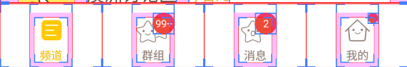

導入
以前に、ボトムナビゲーションバーを実装する2つの方法を説明しましたが、これらの2つの方法は通常の状況にのみ適しています。新浪微博（Sina Weibo）のように、ボトムナビゲーションバーの項目に赤い小さな点とメッセージ数を表示したい場合、前述の2つの方法では対応が難しくなります。他の人のアプリがどのようにしているか見てみましょう。スマートフォンの開発者向けオプションを開き、その中の以下にチェックを入れます：レイアウト境界を表示、そして参考にしているアプリを開くと、ボトムナビゲーションバーは次のようになっています：

上の図からわかるように、この種のボトムナビゲーションバーは、単純なTextViewやRadioGroupで構成されているわけではありません。おそらくレイアウト構造は、外側がLinearLayout、その内側にRelativeLayout、中央にTextViewがあり、さらにTextViewの右上に赤い円の背景を持つTextViewまたは赤い小さな点がある、という感じです。おおよそこのような構造です。そして、これらの点は通常は非表示に設定し、情報プッシュを受信したとき、つまり関連カテゴリの情報があるときに表示され、対応するメッセージ数を表示します。それでは、このボトムナビゲーションバーの効果を実装していきましょう。なお、デモを簡潔にするため、ここではFragmentの切り替え効果は紹介しません。また、ついでにFragmentがActivity内のコンポーネントを取得するための知識を復習しましょう。
1. 実装効果図：
理解を容易にするために、ここではボタンをクリックしてプッシュ情報を受け取ったことをシミュレートし、赤い点を表示します。
実行効果図：

2. 実装フロー：
では、次に上記の効果を実装していきましょう。
ステップ1：関連リソースファイルの準備：
前回と同様に、drawable系のリソースを準備します：
テキストリソース：tab_menu_text.xml
<?xml version="1.0" encoding="utf-8"?>
<selector xmlns:android="http://schemas.android.com/apk/res/android">
<item android:color="@color/text_yellow" android:state_selected="true" />
<item android:color="@color/text_gray" />
</selector>
アイコンリソース：tab_menu_better.xml
<?xml version="1.0" encoding="utf-8"?>
<selector xmlns:android="http://schemas.android.com/apk/res/android">
<item android:drawable="@mipmap/tab_better_pressed" android:state_selected="true" />
<item android:drawable="@mipmap/tab_better_normal" />
</selector>
他の3つも同様に作成しましょう〜！
ステップ2：activityのレイアウトコードを作成する：
4つのオプションのTextViewと右上の赤い点の数字の属性はほぼ同じなので、以下のようになります：
<TextView
android:id="@+id/tab_menu_channel"
android:layout_marginTop="5dp"
android:layout_width="wrap_content"
android:layout_height="48dp"
android:layout_centerInParent="true"
android:textColor="@drawable/tab_menu_text"
android:drawableTop="@drawable/tab_menu_channel"
android:text="@string/tab_menu_alert"/>
<TextView
android:layout_width="20dp"
android:layout_height="20dp"
android:background="@mipmap/bg_num"
android:layout_toRightOf="@+id/tab_menu_channel"
android:layout_marginLeft="-10dp"
android:text="99+"
android:textSize="12sp"
android:gravity="center"
android:textColor="@color/text_white"/>
それらを抽出して、style.xmlに書き込みます：
<style name="tab_menu_text">
<item name="android:layout_marginTop">5dp</item>
<item name="android:layout_width">wrap_content</item>
<item name="android:layout_height">48dp</item>
<item name="android:layout_centerInParent">true</item>
<item name="android:textColor">@drawable/tab_menu_text</item>
</style>
<style name="tab_menu_bgnum">
<item name="android:layout_width">20dp</item>
<item name="android:layout_height">20dp</item>
<item name="android:background">@mipmap/bg_num</item>
<item name="android:layout_marginLeft">-10dp</item>
<item name="android:textSize">12sp</item>
<item name="android:gravity">center</item>
<item name="android:textColor">@color/text_white</item>
</style>
次に、activity.xmlレイアウトを作成します：
<RelativeLayout xmlns:android="http://schemas.android.com/apk/res/android"
xmlns:tools="http://schemas.android.com/tools"
android:layout_width="match_parent"
android:layout_height="match_parent"
tools:context=".MainActivity">
<RelativeLayout
android:id="@+id/ly_top_bar"
android:layout_width="match_parent"
android:layout_height="48dp"
android:background="@color/bg_topbar">
<TextView
android:id="@+id/txt_topbar"
android:layout_width="match_parent"
android:layout_height="match_parent"
android:layout_centerInParent="true"
android:gravity="center"
android:text="信息"
android:textColor="@color/text_topbar"
android:textSize="18sp" />
<View
android:layout_width="match_parent"
android:layout_height="2px"
android:layout_alignParentBottom="true"
android:background="@color/div_white" />
</RelativeLayout>
<LinearLayout
android:id="@+id/ly_tab_menu"
android:layout_width="match_parent"
android:layout_height="56dp"
android:layout_alignParentBottom="true"
android:background="@color/bg_white"
android:orientation="horizontal">
<LinearLayout
android:id="@+id/ly_tab_menu_channel"
android:layout_width="0dp"
android:layout_height="match_parent"
android:layout_weight="1"
android:gravity="center">
<RelativeLayout
android:layout_width="wrap_content"
android:layout_height="match_parent"
android:padding="5dp">
<TextView
android:id="@+id/tab_menu_channel"
style="@style/tab_menu_text"
android:drawableTop="@drawable/tab_menu_channel"
android:text="@string/tab_menu_alert" />
<TextView
android:id="@+id/tab_menu_channel_num"
style="@style/tab_menu_bgnum"
android:layout_toRightOf="@+id/tab_menu_channel"
android:text="99+"
android:visibility="gone" />
</RelativeLayout>
</LinearLayout>
<LinearLayout
android:id="@+id/ly_tab_menu_message"
android:layout_width="0dp"
android:layout_height="match_parent"
android:layout_weight="1"
android:gravity="center">
<RelativeLayout
android:layout_width="wrap_content"
android:layout_height="match_parent"
android:padding="5dp">
<TextView
android:id="@+id/tab_menu_message"
style="@style/tab_menu_text"
android:drawableTop="@drawable/tab_menu_message"
android:text="@string/tab_menu_profile" />
<TextView
android:id="@+id/tab_menu_message_num"
style="@style/tab_menu_bgnum"
android:layout_toRightOf="@+id/tab_menu_message"
android:text="99+"
android:visibility="gone" />
</RelativeLayout>
</LinearLayout>
<LinearLayout
android:id="@+id/ly_tab_menu_better"
android:layout_width="0dp"
android:layout_height="match_parent"
android:layout_weight="1"
android:gravity="center">
<RelativeLayout
android:layout_width="wrap_content"
android:layout_height="match_parent"
android:padding="5dp">
<TextView
android:id="@+id/tab_menu_better"
style="@style/tab_menu_text"
android:drawableTop="@drawable/tab_menu_better"
android:text="@string/tab_menu_pay" />
<TextView
android:id="@+id/tab_menu_better_num"
style="@style/tab_menu_bgnum"
android:layout_toRightOf="@+id/tab_menu_better"
android:text="99+"
android:visibility="gone" />
</RelativeLayout>
</LinearLayout>
<LinearLayout
android:id="@+id/ly_tab_menu_setting"
android:layout_width="0dp"
android:layout_height="match_parent"
android:layout_weight="1"
android:gravity="center">
<RelativeLayout
android:layout_width="wrap_content"
android:layout_height="match_parent"
android:padding="5dp">
<TextView
android:id="@+id/tab_menu_setting"
style="@style/tab_menu_text"
android:drawableTop="@drawable/tab_menu_setting"
android:text="@string/tab_menu_alert" />
<ImageView
android:id="@+id/tab_menu_setting_partner"
android:layout_width="12dp"
android:layout_height="12dp"
android:layout_marginLeft="-5dp"
android:layout_toRightOf="@id/tab_menu_setting"
android:visibility="gone"
android:src="@mipmap/partner_red.html" />
</RelativeLayout>
</LinearLayout>
</LinearLayout>
<View
android:id="@+id/div_tab_bar"
android:layout_width="match_parent"
android:layout_height="2px"
android:layout_above="@id/ly_tab_menu"
android:background="@color/div_white" />
<FrameLayout
android:id="@+id/ly_content"
android:layout_width="match_parent"
android:layout_height="match_parent"
android:layout_above="@id/div_tab_bar"
android:layout_below="@id/ly_top_bar"/>
</RelativeLayout>
ステップ3：Fragmentの画面レイアウトとクラスを作成する
Fragmentのレイアウトは4つの普通のボタンで構成されています：
fg_my.xml:
<?xml version="1.0" encoding="utf-8"?>
<LinearLayout xmlns:android="http://schemas.android.com/apk/res/android"
android:layout_width="match_parent"
android:layout_height="match_parent"
android:orientation="vertical"
android:padding="5dp">
<Button
android:id="@+id/btn_one"
android:layout_width="match_parent"
android:layout_height="wrap_content"
android:text="第一个显示信息"/>
<Button
android:id="@+id/btn_two"
android:layout_width="match_parent"
android:layout_height="wrap_content"
android:text="第二个显示信息"/>
<Button
android:id="@+id/btn_three"
android:layout_width="match_parent"
android:layout_height="wrap_content"
android:text="第三个显示信息"/>
<Button
android:id="@+id/btn_four"
android:layout_width="match_parent"
android:layout_height="wrap_content"
android:text="第四个显示信息"/>
</LinearLayout>
続いて、カスタムFragmentクラスです。ここでは、getActivity.findViewById()を使用してActivity内の赤い点を取得します。これは単に表示を制御しているだけです！MyFragment.java:
public class MyFragment extends Fragment implements View.OnClickListener{
private Context mContext;
private Button btn_one;
private Button btn_two;
private Button btn_three;
private Button btn_four;
public MyFragment() {
}
@Override
public View onCreateView(LayoutInflater inflater, ViewGroup container, Bundle savedInstanceState) {
View view = inflater.inflate(R.layout.fg_my,container,false);
//UI Object
btn_one = (Button) view.findViewById(R.id.btn_one);
btn_two = (Button) view.findViewById(R.id.btn_two);
btn_three = (Button) view.findViewById(R.id.btn_three);
btn_four = (Button) view.findViewById(R.id.btn_four);
//Bind Event
btn_one.setOnClickListener(this);
btn_two.setOnClickListener(this);
btn_three.setOnClickListener(this);
btn_four.setOnClickListener(this);
return view;
}
@Override
public void onClick(View v) {
switch (v.getId()){
case R.id.btn_one:
TextView tab_menu_channel_num = (TextView) getActivity ().findViewById(R.id.tab_menu_channel_num);
tab_menu_channel_num.setText("11");
tab_menu_channel_num.setVisibility(View.VISIBLE);
break;
case R.id.btn_two:
TextView tab_menu_message_num = (TextView) getActivity ().findViewById(R.id.tab_menu_message_num);
tab_menu_message_num.setText("20");
tab_menu_message_num.setVisibility(View.VISIBLE);
break;
case R.id.btn_three:
TextView tab_menu_better_num = (TextView) getActivity ().findViewById(R.id.tab_menu_better_num);
tab_menu_better_num.setText("99+");
tab_menu_better_num.setVisibility(View.VISIBLE);
break;
case R.id.btn_four:
ImageView tab_menu_setting_partner = (ImageView) getActivity ().findViewById(R.id.tab_menu_setting_partner);
tab_menu_setting_partner.setVisibility(View.VISIBLE);
break;
}
}
}
ステップ4：MainActivityを作成する
ここで主要なロジックの実装を行います。一部は前述のTextViewによるボトムナビゲーションバーの実装と似ているため、具体的な説明は省略します。コードは次のとおりです：
MainActivity.java：
/**
* Created by Coder-pig on 2015/8/30 0030.
*/
public class MainActivity extends AppCompatActivity implements View.OnClickListener {
//Activity UI Object
private LinearLayout ly_tab_menu_channel;
private TextView tab_menu_channel;
private TextView tab_menu_channel_num;
private LinearLayout ly_tab_menu_message;
private TextView tab_menu_message;
private TextView tab_menu_message_num;
private LinearLayout ly_tab_menu_better;
private TextView tab_menu_better;
private TextView tab_menu_better_num;
private LinearLayout ly_tab_menu_setting;
private TextView tab_menu_setting;
private ImageView tab_menu_setting_partner;
private FragmentManager fManager;
private FragmentTransaction fTransaction;
private MyFragment fg1;
@Override
protected void onCreate(Bundle savedInstanceState) {
super.onCreate(savedInstanceState);
setContentView(R.layout.activity_main);
bindViews();
ly_tab_menu_channel.performClick();
fg1 = new MyFragment();
fManager = getFragmentManager();
fTransaction = fManager.beginTransaction();
fTransaction.add(R.id.ly_content, fg1).commit();
}
private void bindViews() {
ly_tab_menu_channel = (LinearLayout) findViewById(R.id.ly_tab_menu_channel);
tab_menu_channel = (TextView) findViewById(R.id.tab_menu_channel);
tab_menu_channel_num = (TextView) findViewById(R.id.tab_menu_channel_num);
ly_tab_menu_message = (LinearLayout) findViewById(R.id.ly_tab_menu_message);
tab_menu_message = (TextView) findViewById(R.id.tab_menu_message);
tab_menu_message_num = (TextView) findViewById(R.id.tab_menu_message_num);
ly_tab_menu_better = (LinearLayout) findViewById(R.id.ly_tab_menu_better);
tab_menu_better = (TextView) findViewById(R.id.tab_menu_better);
tab_menu_better_num = (TextView) findViewById(R.id.tab_menu_better_num);
ly_tab_menu_setting = (LinearLayout) findViewById(R.id.ly_tab_menu_setting);
tab_menu_setting = (TextView) findViewById(R.id.tab_menu_setting);
tab_menu_setting_partner = (ImageView) findViewById(R.id.tab_menu_setting_partner);
ly_tab_menu_channel.setOnClickListener(this);
ly_tab_menu_message.setOnClickListener(this);
ly_tab_menu_better.setOnClickListener(this);
ly_tab_menu_setting.setOnClickListener(this);
}
@Override
public void onClick(View v) {
switch (v.getId()) {
case R.id.ly_tab_menu_channel:
setSelected();
tab_menu_channel.setSelected(true);
tab_menu_channel_num.setVisibility(View.INVISIBLE);
break;
case R.id.ly_tab_menu_message:
setSelected();
tab_menu_message.setSelected(true);
tab_menu_message_num.setVisibility(View.INVISIBLE);
break;
case R.id.ly_tab_menu_better:
setSelected();
tab_menu_better.setSelected(true);
tab_menu_better_num.setVisibility(View.INVISIBLE);
break;
case R.id.ly_tab_menu_setting:
setSelected();
tab_menu_setting.setSelected(true);
tab_menu_setting_partner.setVisibility(View.INVISIBLE);
break;
}
}
//重置所有文本的选中状态
private void setSelected() {
tab_menu_channel.setSelected(false);
tab_menu_message.setSelected(false);
tab_menu_better.setSelected(false);
tab_menu_setting.setSelected(false);
}
}
では、これで完了です。
3. コードのダウンロード：
FragmentDemo3.zip：FragmentDemo3.zip をダウンロード
4. この節のまとめ：
この節は前の2つの節よりも少し複雑でしたが、それでも比較的理解しやすい内容だったと思います。また、通常のボトムナビゲーションバーの実装例については、これくらいにしておきます。次の節からは、これをベースにしたジェスチャー操作によるページ切り替えの例を作成していきます。では、今回はこのくらいにします。ありがとうございました。
クリックしてメモを共有
<p style="font-size:14px;">メモはこの記事の内容を拡張したものである必要があります！</p><br> <p style="font-size:12px;"><a href="../tougao.html" target="_blank">記事の投稿は、ここをクリックしてください</a></p> <p style="font-size:14px;"><a href="./runoob-user-test-intro.html" target="_blank">登録招待コードの取得方法</a></p> <h3 class="text-muted"><i class="fa fa-info-circle" aria-hidden="true"></i> メモを共有する前に<a href=".." class="runoob-pop">ログイン</a>が必要です！</h3> <p><a href="./runoob-user-test-intro.html" target="_blank">登録招待コードの取得方法</a></p>